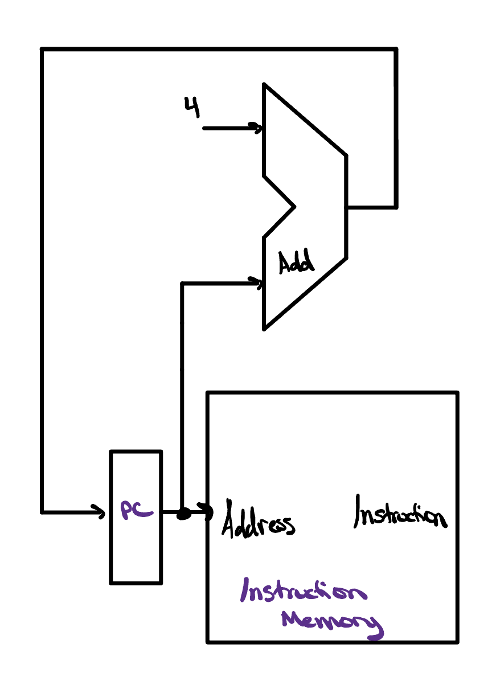
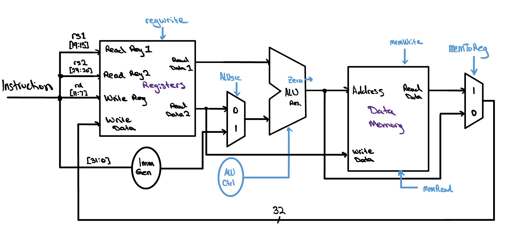

Constructing a Datapath
We have every piece on the bench — the program counter, the instruction and data memories, the register file, and the ALU. Now we wire them into a single working circuit: the datapath, the path every instruction travels from fetch to finish. A few muxes and the right connections, and one design runs arithmetic, memory, and branch instructions alike.

Incrementing the PC
Of everything that has to work inside a processor, few circuits carry as much weight as the one that moves the program counter forward. If the PC ever lands on the wrong address, the CPU fetches the wrong instruction and the whole program unravels — so getting this piece right is foundational to a functioning design. We brushed up against the key idea last lesson: because every RISC-V instruction is exactly 32 bits, or 4 bytes, the instructions sit packed one after another in memory, each one a full 4 bytes further along than the instruction before it. To step from the current instruction to the very next, all we need to do is add 4 to the program counter.
And that is really the whole job here: advancing the PC is nothing more than addition. Since we are only ever adding, we can keep things simple and reuse the very same ripple carry adder we built back in the ALU project, handing it the current PC and a constant 4.

![An expanded version of the previous diagram that lets the program counter jump as well as increment. The PC still feeds the Instruction Memory address and the first adder, which adds 4. Now the PC and an immediate value also feed a second adder that computes an alternate target address. The two candidate addresses meet at a multiplexer on the right — PC + 4 on input 0, the branch target on input 1 — and a Branch Logic block drives the multiplexer's select line. The chosen address loops back around to the PC's input.](../../assets/single-cycle-cpu/pc-inc-upgrade.jpg)
Adding 4 covers the common case, but it is not the only way a program can move. Some instructions need to send the program counter somewhere other than the very next instruction, redirecting execution to a different point in the code. We can grow our picture to handle this too. Alongside the adder that computes PC + 4, we introduce a second adder that produces an alternate target address, and we place a multiplexer at the program counter's input to choose between the two candidates. A dedicated block of branch logic drives that multiplexer: when execution should simply continue in order, it selects PC + 4; when an instruction calls for a jump, it selects the alternate address instead. And believe it or not, those two moves — stepping forward to the next instruction or jumping to a different address entirely — together cover everything we need instruction fetching to do.
Operating on Our Data
With the program counter handing us one instruction after another, the
next job is to act on them. Each 32-bit instruction is decoded
into its fields, allowing us to send rs1,
rs2, and rd
straight into our register file. Again, RISC-V is unique
in that no matter the instruction, rs1,
rs2, and rd will
always lie in the same bit positions within the instruction, making the job
extra easy for our hardware to decode our instruction. These register
addresses then determine the data that is fed into the ALU to operate on.
The ALU doesn't always have to operate on two register values,
though, and can instead operate on an immediate.
After all, we want our CPU to be able to run instructions like
addi, andi, ori, and even branch instructions
like beq and bne. In order to let the ALU take either
source, we introduce a 2x1 multiplexer which selects
either the data read from register 2 or the
immediate to use as the other operand for our
ALU. One thing we have to be careful about, however, is that the
immediate isn't laid out the same way from one
instruction format to the next, so a dedicated
immediate-generation unit first extracts and sign-extends
it into a clean 32-bit value the ALU can use.
![A hand-drawn datapath for operating on register data. The instruction bus fans out to rs1 [19:15], rs2 [24:20], and rd [11:7], which drive the register file's Read Reg 1, Read Reg 2, and Write Reg ports, with a regwrite control gating writes. Read Data 1 runs straight to the ALU's first input; Read Data 2 and an immediate produced by an Imm Gen unit meet at an ALUSrc 2x1 multiplexer that feeds the ALU's second input. An ALU Ctrl block selects the operation, and the ALU produces a Zero flag and an ALU result.](../../assets/single-cycle-cpu/next-phase.jpg)

The last step before we can put this all together is incorporating our
data memory into this datapath. Our CPU will access the
data memory during lw and sw instructions, both of which
require us to add an offset value to a base register address. Because of
this, we connect the output of our ALU to the Address port of the data
memory. For sw instructions, we need to write a value
from a register to memory, so we simply connect the
rs2 data line to the Write Data port of our
data memory. In lw instructions, we load a word to a register
from memory, so we need to route the Read Data port of the data
memory all the way back to the Write Data port of our register file. And
lastly, before we can call this ready to go, we need to remember that we
should be able to choose whether we want to store the ALU's result
to our register file or the word we are loading to our register file
— a simple 2x1 mux should do the trick.
The Whole Kit and Kaboodle
And just like that, you have your complete single cycle CPU datapath. This is about as simple as a CPU can get, and yet it still looks like a plate of spaghetti. You may notice that we very nearly just bolted together the PC-increment logic and the ALU logic from the last two sections — but now there is a strange “Control” bubble sitting at the heart of the design. This is the control unit, and it is the brain to the datapath's brawn.
We will dive deeper into the control unit in the next lesson, but for now you can think of it as the “mission control” of the datapath. It turns the knobs and throws the switches that decide whether the register file writes, which operand the ALU takes, and whether memory is read or written, steering the datapath through executing each instruction. Without it, our datapath would be nothing more than a tangle of idle wires, full of potential but with no idea what to do.
Check Yourself
For the instruction lw x7, 20(x9), toggle the control signals below so they would carry this instruction through the datapath, then press Submit.